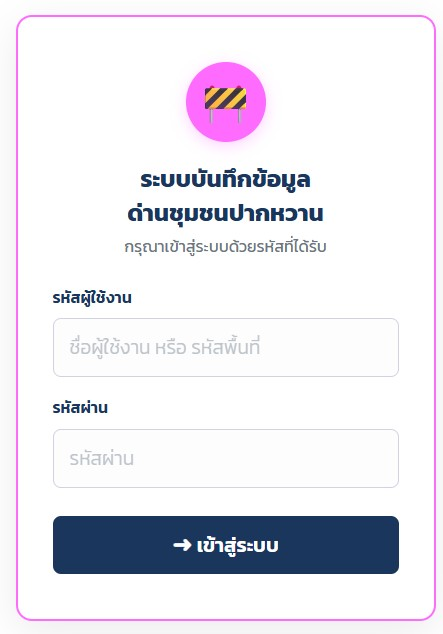

ระบบบันทึกข้อมูลด่านชุมชนปากหวาน
แอปพลิเคชันสำหรับบันทึกข้อมูลการปฏิบัติงานด่านชุมชนปากหวาน ครอบคลุม 10 จังหวัดภาคอีสาน พร้อม Dashboard วิเคราะห์และแผนที่ Leaflet พัฒนาด้วย Google Apps Script

หน้าจอระบบ

หน้าจอ 1

หน้าจอ 2

หน้าจอ 3

หน้าจอ 4
การปฏิบัติงานด่านชุมชนปากหวาน
การปฏิบัติงานด่านชุมชน
ด่านชุมชนปากหวานในพื้นที่
ฟีเจอร์หลักของระบบ
บันทึกข้อมูลด่านชุมชน
บันทึกผลการปฏิบัติงาน จำนวนรถที่ตรวจ ผู้ฝ่าฝืน และกิจกรรมรณรงค์
แผนที่ตำแหน่งด่าน (Leaflet)
แสดงตำแหน่งด่านชุมชนบนแผนที่ interactive พร้อม marker รายละเอียด
Dashboard วิเคราะห์ข้อมูล
กราฟ Chart.js แสดงสถิติรายด่าน รายอำเภอ และแนวโน้มตามช่วงเวลา
สิทธิ์ 3 ระดับ
จังหวัด (ดูทั้งหมด) · อำเภอ (ดูและแก้ไข) · ตำบล (บันทึกของตนเอง)
จัดการรูปภาพ
อัปโหลดและจัดเก็บภาพการปฏิบัติงานด่านชุมชนพร้อม folder แยกรายด่าน
ข้อมูลที่บันทึกในระบบ
ตำแหน่งด่านชุมชน
พิกัด GPS จังหวัด อำเภอ ตำบล ชื่อด่าน
วัน เวลา และผลปฏิบัติงาน
วันที่ตั้งด่าน จำนวนชม. จำนวนรถ/คน พฤติกรรมที่ตรวจพบ
ผู้ปฏิบัติงาน
ชื่อผู้บันทึก หน่วยงาน ตำแหน่ง จำนวนเจ้าหน้าที่
ครอบคลุม 10 จังหวัดอีสาน
นครราชสีมา · บุรีรัมย์ · สุรินทร์ · ศรีสะเกษ · อุบลฯ · ยโสธร · ชัยภูมิ · อำนาจเจริญ · มหาสารคาม · ร้อยเอ็ด
ข้อมูลด่านชุมชน
จุดตั้งด่าน ช่วงเวลา ผลการตรวจ ภาพประกอบ
เทคโนโลยีที่ใช้
Google Apps Script
Bootstrap 5
Leaflet.js
Chart.js 4.4
Google Sheets
SweetAlert2